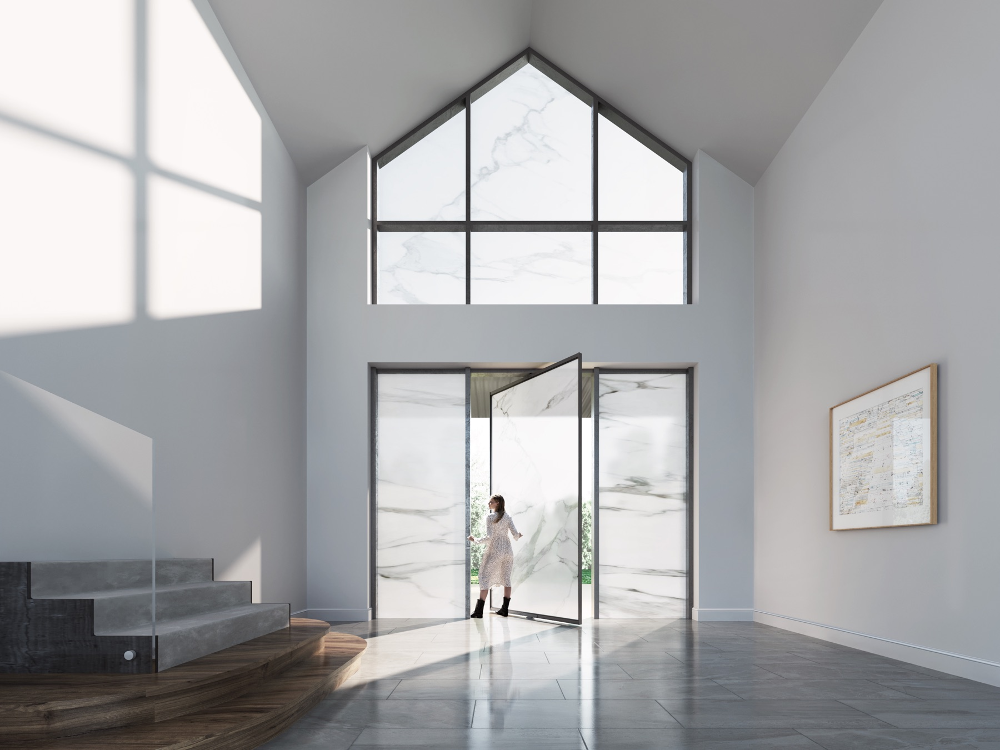
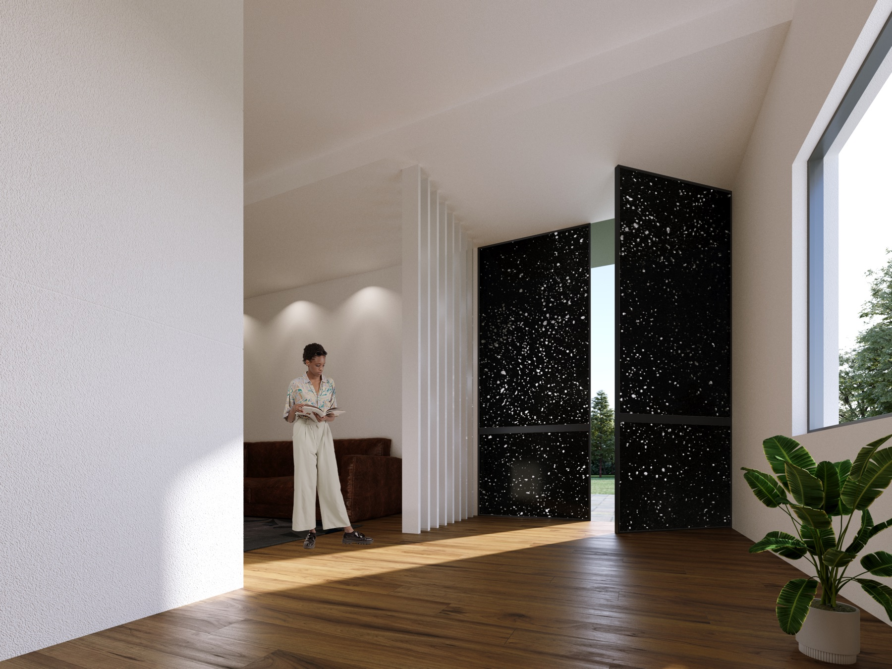
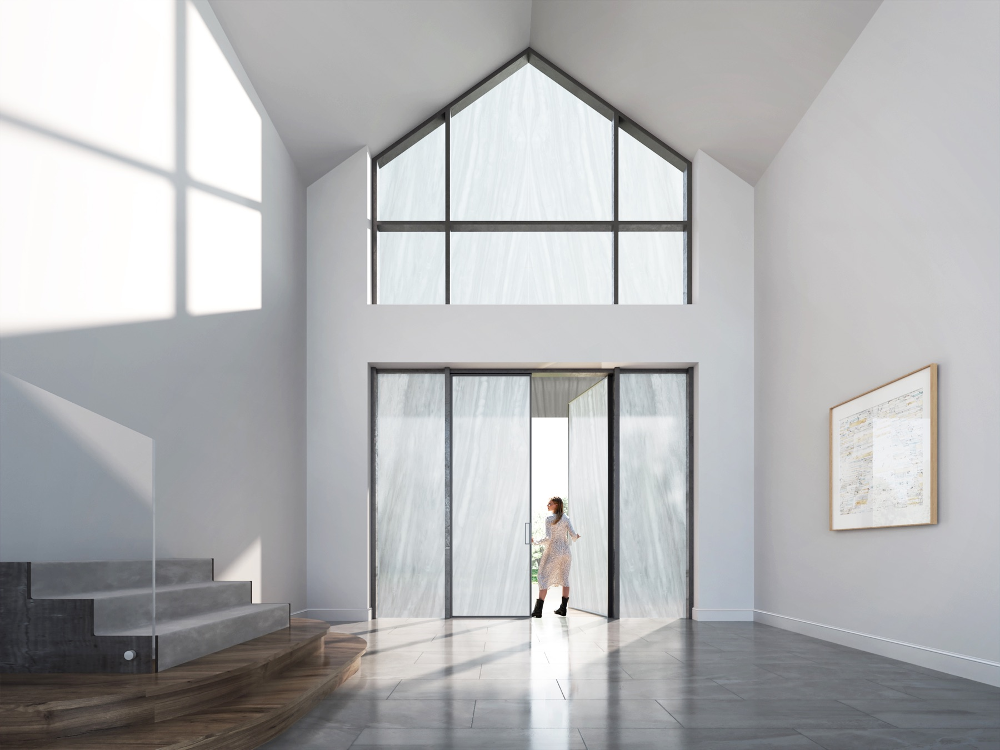
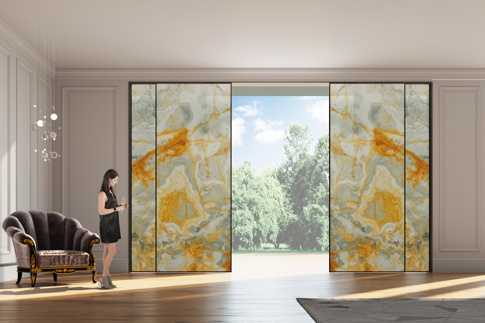
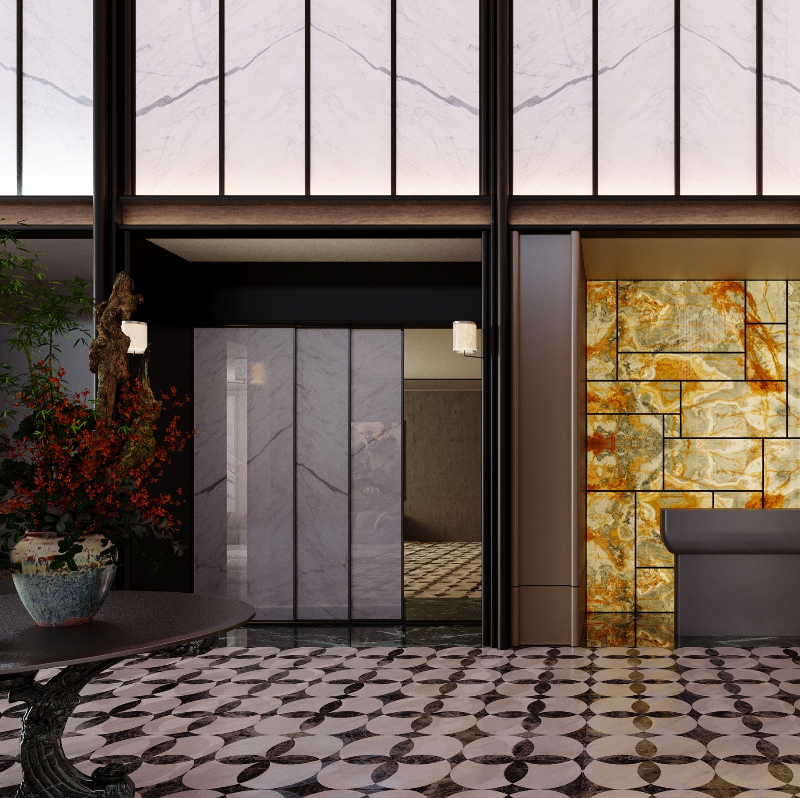
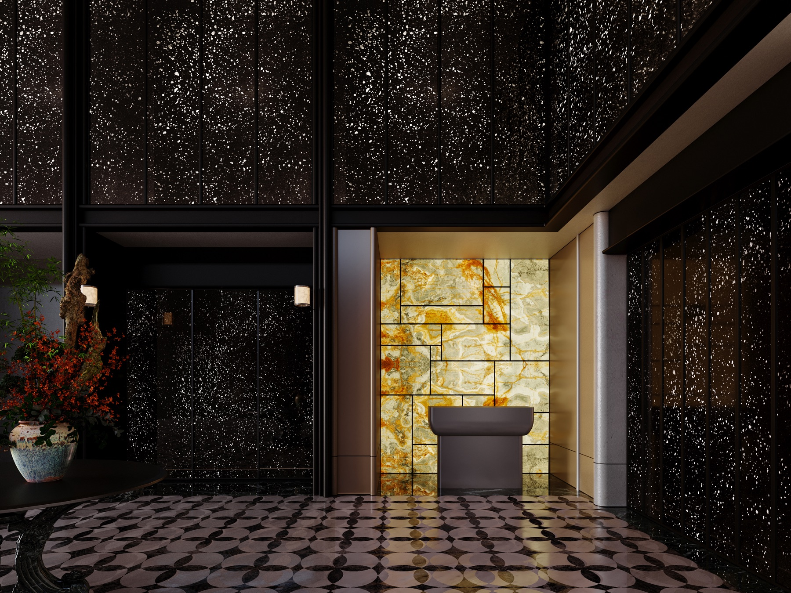
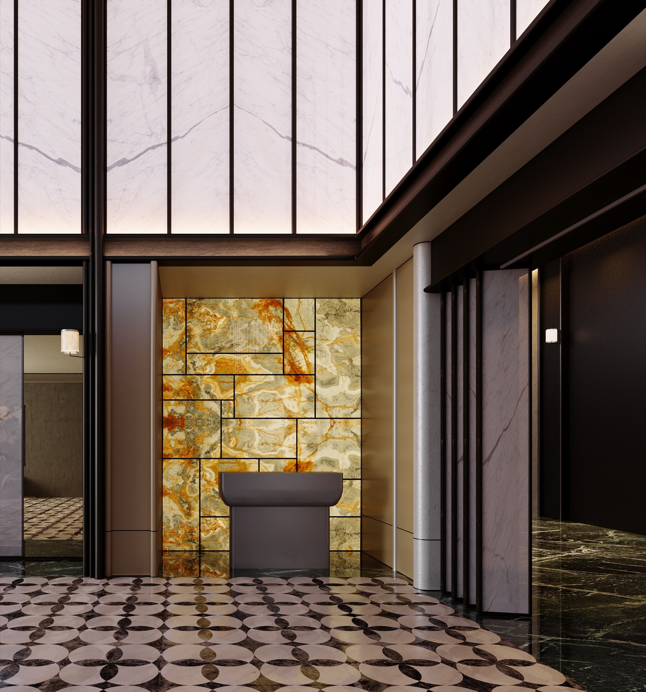
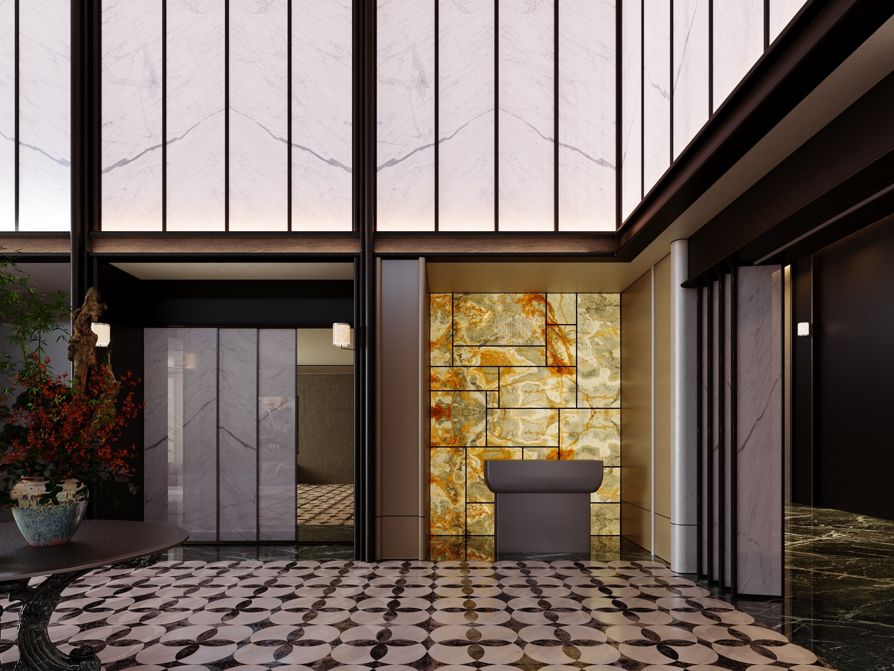

Real stone veining and translucent door leaves for Barn Door Plus, pivot, hinged, sliding, folding and integrated applications.
This is no longer a single barn-door product. It is a complete family of fused translucent stone door leaves, partitions and light-facing interfaces for residences, clubs, show flats, retail displays and hotel public spaces.
| Modules | Barn Door Plus / Pivot Door / Hinged Door / Sliding Door / Folding Door / Integrated Applications |
|---|---|
| Material system | Fused translucent stone leaves paired with glass, lighting, hardware and frame systems according to each application |
| Spaces | Living rooms, studies, walk-in closets, foyers, galleries, reception areas and retail displays |
| Design focus | Natural veining carries the visual identity, while translucency, opening scale and frame proportion shape the spatial experience |
Barn Door Plus offers light sliding movement, easy installation and a strong luminous natural-stone visual presence.

For foyers, clubs and display entries, the pivot format turns the stone leaf into a ceremonial threshold and first luminous surface.

For bedrooms, studies and closets, the hinged format creates a clear boundary while keeping the door leaf as a complete luminous stone plane.


For corridors, suites and open living areas, sliding tracks free the wall surface and let the translucent stone shift with changing light.


For wide openings, multiple leaves fold away to keep generous passage and unfold into a continuous translucent stone screen.


When doors, walls, display cabinets and lighting are treated together, translucent stone extends from a single leaf into a complete spatial backdrop.

Send opening dimensions, operation type, site photos or plans. We will recommend the right fit across Barn Door Plus, pivot, hinged, sliding, folding or integrated applications.